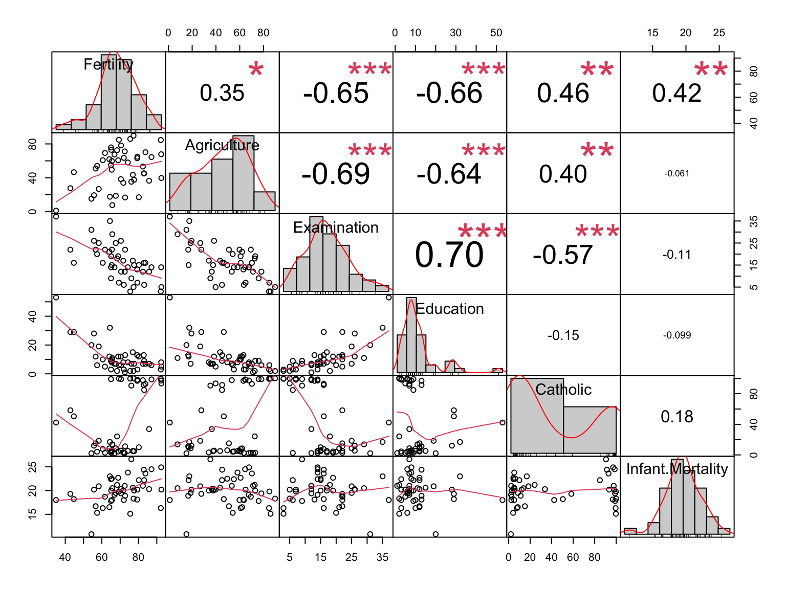
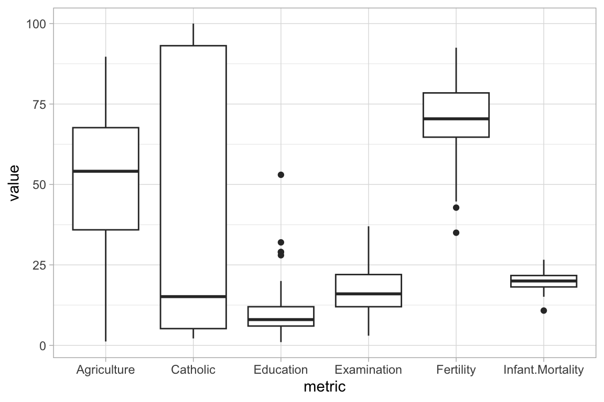

Code
sw <- datasets::swiss
sw$Prov <- rownames(sw)
sw <- sw %>% select(Prov, c(1:ncol(sw)-1))Basic Quarto doc but with added features commonly used in yml header:
sw <- datasets::swiss
sw$Prov <- rownames(sw)
sw <- sw %>% select(Prov, c(1:ncol(sw)-1))str(sw)'data.frame': 47 obs. of 7 variables:
$ Prov : chr "Courtelary" "Delemont" "Franches-Mnt" "Moutier" ...
$ Fertility : num 80.2 83.1 92.5 85.8 76.9 76.1 83.8 92.4 82.4 82.9 ...
$ Agriculture : num 17 45.1 39.7 36.5 43.5 35.3 70.2 67.8 53.3 45.2 ...
$ Examination : int 15 6 5 12 17 9 16 14 12 16 ...
$ Education : int 12 9 5 7 15 7 7 8 7 13 ...
$ Catholic : num 9.96 84.84 93.4 33.77 5.16 ...
$ Infant.Mortality: num 22.2 22.2 20.2 20.3 20.6 26.6 23.6 24.9 21 24.4 ...# glimpse(sw) # no clear advantage over str
summary(sw) Prov Fertility Agriculture Examination
Length:47 Min. :35.00 Min. : 1.20 Min. : 3.00
Class :character 1st Qu.:64.70 1st Qu.:35.90 1st Qu.:12.00
Mode :character Median :70.40 Median :54.10 Median :16.00
Mean :70.14 Mean :50.66 Mean :16.49
3rd Qu.:78.45 3rd Qu.:67.65 3rd Qu.:22.00
Max. :92.50 Max. :89.70 Max. :37.00
Education Catholic Infant.Mortality
Min. : 1.00 Min. : 2.150 Min. :10.80
1st Qu.: 6.00 1st Qu.: 5.195 1st Qu.:18.15
Median : 8.00 Median : 15.140 Median :20.00
Mean :10.98 Mean : 41.144 Mean :19.94
3rd Qu.:12.00 3rd Qu.: 93.125 3rd Qu.:21.70
Max. :53.00 Max. :100.000 Max. :26.60 chart.Correlation(sw[,2:7], histogram = TRUE)
skim(sw)| Name | sw |
| Number of rows | 47 |
| Number of columns | 7 |
| _______________________ | |
| Column type frequency: | |
| character | 1 |
| numeric | 6 |
| ________________________ | |
| Group variables | None |
Variable type: character
| skim_variable | n_missing | complete_rate | min | max | empty | n_unique | whitespace |
|---|---|---|---|---|---|---|---|
| Prov | 0 | 1 | 4 | 12 | 0 | 47 | 0 |
Variable type: numeric
| skim_variable | n_missing | complete_rate | mean | sd | p0 | p25 | p50 | p75 | p100 | hist |
|---|---|---|---|---|---|---|---|---|---|---|
| Fertility | 0 | 1 | 70.14 | 12.49 | 35.00 | 64.70 | 70.40 | 78.45 | 92.5 | ▂▂▇▇▅ |
| Agriculture | 0 | 1 | 50.66 | 22.71 | 1.20 | 35.90 | 54.10 | 67.65 | 89.7 | ▃▃▆▇▅ |
| Examination | 0 | 1 | 16.49 | 7.98 | 3.00 | 12.00 | 16.00 | 22.00 | 37.0 | ▅▇▆▂▂ |
| Education | 0 | 1 | 10.98 | 9.62 | 1.00 | 6.00 | 8.00 | 12.00 | 53.0 | ▇▃▁▁▁ |
| Catholic | 0 | 1 | 41.14 | 41.70 | 2.15 | 5.20 | 15.14 | 93.12 | 100.0 | ▇▁▁▁▅ |
| Infant.Mortality | 0 | 1 | 19.94 | 2.91 | 10.80 | 18.15 | 20.00 | 21.70 | 26.6 | ▁▂▇▆▂ |
Not used - creates a separate, detailed html file that loads in browser
# DataExplorer creates separate html doc and loads in browser - detailed exploration of data
#create_report(sw)dfSummary(sw, plain.ascii = TRUE, style = 'grid', tmp.img.dir = "/tmp")Data Frame Summary
sw
Dimensions: 47 x 7
Duplicates: 0
+----+------------------+-------------------------+--------------------+---------------------+----------+---------+
| No | Variable | Stats / Values | Freqs (% of Valid) | Graph | Valid | Missing |
+====+==================+=========================+====================+=====================+==========+=========+
| 1 | Prov | 1. Aigle | 1 ( 2.1%) | | 47 | 0 |
| | [character] | 2. Aubonne | 1 ( 2.1%) | | (100.0%) | (0.0%) |
| | | 3. Avenches | 1 ( 2.1%) | | | |
| | | 4. Boudry | 1 ( 2.1%) | | | |
| | | 5. Broye | 1 ( 2.1%) | | | |
| | | 6. Conthey | 1 ( 2.1%) | | | |
| | | 7. Cossonay | 1 ( 2.1%) | | | |
| | | 8. Courtelary | 1 ( 2.1%) | | | |
| | | 9. Delemont | 1 ( 2.1%) | | | |
| | | 10. Echallens | 1 ( 2.1%) | | | |
| | | [ 37 others ] | 37 (78.7%) | IIIIIIIIIIIIIII | | |
+----+------------------+-------------------------+--------------------+---------------------+----------+---------+
| 2 | Fertility | Mean (sd) : 70.1 (12.5) | 46 distinct values | : . | 47 | 0 |
| | [numeric] | min < med < max: | | : : | (100.0%) | (0.0%) |
| | | 35 < 70.4 < 92.5 | | : : . | | |
| | | IQR (CV) : 13.7 (0.2) | | . : : : | | |
| | | | | . . : : : : : | | |
+----+------------------+-------------------------+--------------------+---------------------+----------+---------+
| 3 | Agriculture | Mean (sd) : 50.7 (22.7) | 47 distinct values | : | 47 | 0 |
| | [numeric] | min < med < max: | | : | (100.0%) | (0.0%) |
| | | 1.2 < 54.1 < 89.7 | | : : . : : : | | |
| | | IQR (CV) : 31.8 (0.4) | | : : : : : : : | | |
| | | | | : : : : : : : : : | | |
+----+------------------+-------------------------+--------------------+---------------------+----------+---------+
| 4 | Examination | Mean (sd) : 16.5 (8) | 22 distinct values | : | 47 | 0 |
| | [integer] | min < med < max: | | : : | (100.0%) | (0.0%) |
| | | 3 < 16 < 37 | | . : : : | | |
| | | IQR (CV) : 10 (0.5) | | . : : : : | | |
| | | | | : : : : : : : . | | |
+----+------------------+-------------------------+--------------------+---------------------+----------+---------+
| 5 | Education | Mean (sd) : 11 (9.6) | 19 distinct values | : | 47 | 0 |
| | [integer] | min < med < max: | | : | (100.0%) | (0.0%) |
| | | 1 < 8 < 53 | | : | | |
| | | IQR (CV) : 6 (0.9) | | : : | | |
| | | | | : : . | | |
+----+------------------+-------------------------+--------------------+---------------------+----------+---------+
| 6 | Catholic | Mean (sd) : 41.1 (41.7) | 46 distinct values | : | 47 | 0 |
| | [numeric] | min < med < max: | | : . | (100.0%) | (0.0%) |
| | | 2.1 < 15.1 < 100 | | : : | | |
| | | IQR (CV) : 87.9 (1) | | : : | | |
| | | | | : : . : | | |
+----+------------------+-------------------------+--------------------+---------------------+----------+---------+
| 7 | Infant.Mortality | Mean (sd) : 19.9 (2.9) | 37 distinct values | : | 47 | 0 |
| | [numeric] | min < med < max: | | : : | (100.0%) | (0.0%) |
| | | 10.8 < 20 < 26.6 | | : : : : | | |
| | | IQR (CV) : 3.6 (0.1) | | : : : : | | |
| | | | | . : : : : : : . | | |
+----+------------------+-------------------------+--------------------+---------------------+----------+---------+# pivot sw to have all metrics in a metrics col and values in a values col
sw_long <- sw %>% pivot_longer(cols = c(2:7), names_to = "metric", values_to = "value")
sw_long %>% ggplot(aes(x=metric, y=value))+geom_boxplot()